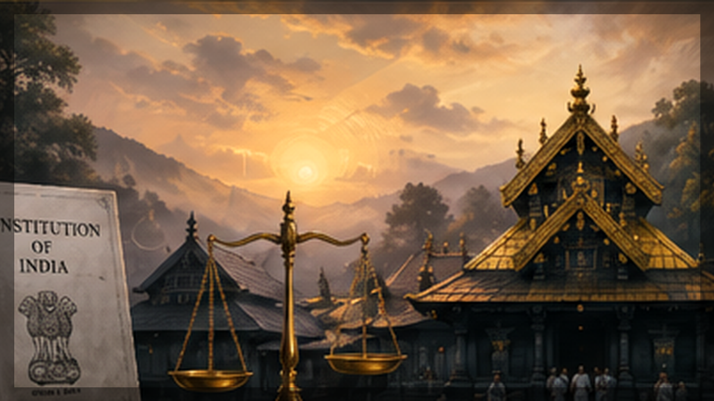

Explainer on the Sabarimala case, 2018 ruling, review reference and 2026 nine-judge Bench hearings on religious freedom, equality and Articles 25 and 26.

Executive Summary
- As of 14.05.2026, the Supreme Court's nine-judge Constitution Bench had reserved judgment in the Sabarimala reference after an extended hearing.
- The nine-judge bench had not delivered a final verdict by that date. A live verification before publication on 19 May 2026 did not locate any final nine-judge judgment delivered after 14 May 2026.
- The 2018 five-judge judgment in Indian Young Lawyers Association v. State of Kerala remains the operative merits decision unless and until altered in the pending review/reference process.
- The 2026 reference concerns Articles 25 and 26, denominational rights, the essential religious practices doctrine, constitutional morality, equality, dignity and judicial review of religious practices.
Introduction
The Sabarimala case has become one of the most important religion-and-rights disputes in modern Indian constitutional law. At one level, the dispute concerns whether women in the age group of roughly 10 to 50 years could be excluded from entering the Sabarimala temple in Kerala on the basis of the deity's character as a naishtika brahmachari. At a deeper level, the litigation asks how the Constitution should resolve a conflict between individual access to worship, religious community autonomy, gender equality, and the power of constitutional courts to review faith-based practices.
This article explains the legal position and procedural developments up to 14 May 2026, when the Supreme Court's nine-judge Constitution Bench reserved its verdict in the reference. The distinction is important: the Supreme Court had already decided the temple-entry merits question in 2018 by a 4:1 majority, but the later review/reference process reopened larger constitutional questions that may affect not only Sabarimala, but also future public-interest litigation concerning religious practices across faiths.
Background of the Sabarimala Temple Entry Dispute
Sabarimala is a prominent Hindu pilgrimage temple in Kerala dedicated to Lord Ayyappa. The traditional restriction that gave rise to the litigation concerned the exclusion of women of menstruating age, often described as women between 10 and 50 years. Supporters of the practice framed the restriction as a temple-specific religious practice connected with the celibate character of the deity and the discipline expected from pilgrims.
The constitutional challenge took shape when the Indian Young Lawyers Association approached the Supreme Court under Article 32. The petition converted a temple-entry controversy into a constitutional dispute involving equality, non-discrimination, freedom of conscience, freedom to manage religious affairs, and the role of the State and courts in reforming religious institutions open to the public.
The 1991 Kerala High Court Judgment
The pre-2018 legal baseline was the Kerala High Court's decision in S. Mahendran v. Travancore Devaswom Board, decided on 05.04.1991. The Kerala High Court upheld the restriction on the entry of women in the age group of 10 to 50 years and treated it as consistent with the long-standing practice of the temple. That judgment effectively sustained the exclusion until the Supreme Court's later intervention.
For constitutional analysis, the 1991 decision matters because it shows that the issue was not a sudden controversy. Before the 2018 Supreme Court judgment, there was already a judicial determination accepting the practice. The Supreme Court in 2018 therefore had to decide whether that earlier approach could survive scrutiny under Part III of the Constitution.
The 2018 Supreme Court Judgment
On 28.09.2018, a five-judge Constitution Bench of the Supreme Court delivered judgment in Indian Young Lawyers Association v. State of Kerala. The Bench consisted of Chief Justice Dipak Misra, Justices A.M. Khanwilkar, R.F. Nariman, D.Y. Chandrachud and Indu Malhotra. By a 4:1 majority, the Court held that the exclusion of women from Sabarimala was unconstitutional.
The majority held, in substance, that the devotees of Lord Ayyappa at Sabarimala did not constitute a separate religious denomination protected in the manner claimed under Article 26; that women devotees were equally entitled to worship under Article 25(1); that the exclusionary custom was not shown to be an essential religious practice; and that Rule 3(b) of the Kerala Hindu Places of Public Worship (Authorisation of Entry) Rules, 1965 could not sustain a custom that contradicted the parent Act and constitutional guarantees.
Majority View in 2018
The lead opinion of Chief Justice Dipak Misra, for himself and Justice Khanwilkar, treated the exclusion as inconsistent with the constitutional promise of equal access to worship. It rejected the argument that Sabarimala devotees formed a separate religious denomination for the purpose of Article 26. It also treated the practice as incapable of being protected as essential to the religion.
Justice R.F. Nariman concurred and gave additional emphasis to statutory and equality analysis. Justice D.Y. Chandrachud wrote separately and developed a stronger anti-exclusion account, linking the exclusion to constitutional ideas of dignity, purity, pollution and social exclusion under Article 17.
Justice Indu Malhotra's Dissent
Justice Indu Malhotra dissented. Her opinion is central to understanding the later review/reference stage. She cautioned that courts in a secular constitutional order should not ordinarily decide which religious practices are essential merely by applying external rationality. In her view, devotees of Lord Ayyappa could claim denominational protection, and questions of deep religious practice should not lightly be reopened at the instance of persons who do not themselves belong to or participate in the faith practice.
The dissent also warned that judicial intervention in matters of religion may have consequences beyond one temple. That warning became highly relevant in the 2019 review/reference order, where the Court considered the possibility that the Sabarimala reasoning would affect other pending disputes involving mosques, dargahs, Parsi fire temples, female genital mutilation and excommunication.
Review Petitions and the 2019 Reference
After the 2018 judgment, several review petitions were filed. On 13.11.2018, the Supreme Court agreed to hear the review petitions in open court and expressly clarified that there was no stay of the 2018 judgment. This means the 2018 decision did not become non-operative merely because review petitions were pending.
On 14.11.2019, a review bench delivered a 3:2 order in Kantaru Rajeevaru v. Indian Young Lawyers Association. Instead of finally deciding the review petitions, the majority kept the review petitions and connected writ petitions pending and referred broader constitutional questions to a larger bench. The dissenting judges, Justices Nariman and Chandrachud, objected to the breadth of the reference in review jurisdiction.
The 2020 Nine-Judge Bench Order
On 10.02.2020, a nine-judge bench upheld the maintainability of the larger-bench reference. The Court proceeded on the basis that it could answer broad questions of law concerning Articles 25 and 26 even though the matter had arisen in the context of review petitions. The 2020 order gave the 2019 reference a procedural foundation and framed the road for later hearings.
The questions placed before the larger bench include the scope of Articles 25 and 26, the meaning of morality in those provisions, the relationship between individual rights and denominational rights, whether Article 26 is subject to other provisions of Part III beyond public order, morality and health, the meaning of "sections of Hindus" in Article 25(2)(b), the limits of judicial review over religious practices, and the maintainability of PILs by persons outside the religious denomination or group.
What Happened in the Recent Hearings as of 14.05.2026
The matter returned for final arguments before a nine-judge Constitution Bench in April and May 2026. The current bench comprised CJI Surya Kant and Justices B.V. Nagarathna, M.M. Sundresh, Ahsanuddin Amanullah, Aravind Kumar, Augustine George Masih, Prasanna B. Varale, R. Mahadevan and Joymalya Bagchi. The official Supreme Court transcript page shows released transcripts for several April and May hearing dates, and the source pack includes cause-list and legal-reporting material for the final stretch of the hearing.
The hearings began on 07.04.2026. They extended beyond the original schedule and continued into May. By 14.05.2026, the Supreme Court had heard the reference for 16 days and reserved judgment. This is the key procedural fact for readers searching for "Sabarimala judgment 2026": as of 14 May 2026, there was no final nine-judge verdict; the matter was reserved for judgment.
Timeline Snapshot
| Date | Event | Legal Significance |
|---|---|---|
| 05.04.1991 | Kerala High Court in S. Mahendran | Restriction on women aged 10-50 upheld. |
| 2006 | Indian Young Lawyers Association files Article 32 petition | Dispute becomes a Supreme Court constitutional case. |
| 28.09.2018 | Five-judge Constitution Bench judgment | 4:1 majority holds exclusion unconstitutional. |
| 13.11.2018 | Review petitions listed in open court | No stay of the 2018 judgment. |
| 14.11.2019 | Review/reference order in Kantaru Rajeevaru | Broader constitutional questions referred to larger bench. |
| 10.02.2020 | Nine-judge bench order | Maintainability of reference upheld. |
| 07.04.2026 | Final hearing begins | Reference argued before current nine-judge bench. |
| 14.05.2026 | Verdict reserved | No final nine-judge judgment delivered as of that date. |
Key Constitutional Questions Before the Court
The 2026 hearing has placed some of Indian constitutional law's hardest questions before the Court. The immediate dispute concerns women entry into Sabarimala, but the doctrinal answer may govern disputes concerning public religious institutions across communities.
Essential Religious Practices Doctrine
The essential religious practices doctrine asks whether a claimed practice is so integral to a religion that it deserves constitutional protection. Critics argue that this test makes judges decide theology. Supporters argue that courts need some method to distinguish genuine religious practice from secular, social or exclusionary claims wrapped in religious language. In Sabarimala, the ERP doctrine sits at the centre of the conflict because the petitioners and intervenors dispute whether the exclusion is a protected religious practice or an unconstitutional social exclusion.
Articles 25 and 26: Individual and Denominational Rights
Article 25 protects freedom of conscience and the right freely to profess, practise and propagate religion, subject to public order, morality, health and other provisions of Part III. Article 26 protects the right of religious denominations to manage their own affairs in matters of religion, also subject to public order, morality and health. The hard question is how these rights interact when an individual worshipper claims entry into a public temple but the institution or its supporters claim that the exclusion itself is part of the temple's religious identity.
Equality, Gender Justice and Constitutional Morality
Articles 14, 15, 17 and 21 enter the case through equality, anti-exclusion and dignity arguments. The 2018 majority saw the exclusion as incompatible with equal constitutional citizenship. The counter-argument is that constitutional morality cannot become an open-ended judicial licence to rewrite all religious practice. The nine-judge bench must therefore decide whether "morality" in Articles 25 and 26 refers only to public morality in a narrower sense, or whether it includes constitutional morality capable of invalidating exclusionary religious practices in public institutions.
Public Order, Morality, Health and Judicial Review
Both Articles 25 and 26 expressly refer to public order, morality and health. The Court must decide whether those limits are exhaustive for denominational rights, or whether Article 26 is also subject to other Part III guarantees. This matters because if Article 26 is insulated except for public order, morality and health, religious autonomy claims may become more resistant to equality-based review.
Why the 2026 Reference Matters
The 2026 reference matters because it may reshape the balance between faith, equality and institutional autonomy. A strong deference model would limit judicial scrutiny of religious practices and leave social reform largely to legislatures. A strong anti-exclusion model would reaffirm that public religious institutions cannot deny access or dignity in ways inconsistent with Part III. A middle path may preserve judicial review while requiring courts to avoid theological ranking and focus on public character, statutory framework, bona fides, exclusionary impact and constitutional injury.
The judgment may also affect future PILs. If the Court restricts outsider PILs in religious-practices cases, maintainability will become a threshold battleground. If it allows such PILs but sets stricter tests for interference, public-interest challenges may continue but with heavier doctrinal burdens.
Current Legal Position as of 14.05.2026
The current legal position can be stated carefully in four points. First, the 2018 five-judge judgment is the operative merits judgment on Sabarimala entry unless altered through the pending review/reference process. Secondly, the Supreme Court had clarified in 2018 that listing review petitions did not stay the 2018 judgment. Thirdly, the 2019 review/reference order kept the review petitions and connected matters pending while sending larger questions to a nine-judge bench. Fourthly, as of 14.05.2026, the nine-judge bench had reserved judgment but had not delivered its final verdict.
Therefore, it would be inaccurate to say that the 2026 nine-judge bench had finally overruled, affirmed or modified the 2018 judgment as of 14 May 2026. The accurate statement is that the 2018 judgment continued to operate formally, while its doctrinal foundation and connected constitutional questions were under consideration before the reserved nine-judge bench.
Likely Implications for Indian Constitutional Law
The eventual nine-judge judgment may become a leading precedent on the scope of religious freedom in India. It may clarify whether the essential religious practices doctrine survives, is modified, or is replaced by a more deferential or more rights-sensitive test. It may also decide how much weight courts should give to constitutional morality when religious practices are challenged.
For gender equality, the case will determine whether exclusion from a religious institution can be analysed primarily as a matter of equal citizenship and dignity, or whether courts must defer more substantially to temple-specific or denominational claims. For religious freedom, the judgment may define the boundary between internal religious autonomy and constitutional accountability in public religious institutions. For future PILs, it may decide who can bring such challenges and how courts should screen them.
The most important point is that Sabarimala is no longer only a dispute about entry into one temple. It has become a constitutional test case for how India mediates religious pluralism, social reform, individual dignity and institutional autonomy.
Conclusion
As of 14 May 2026, the Sabarimala reference stood reserved for judgment before a nine-judge Constitution Bench. No final nine-judge verdict had been delivered by that date, and a pre-publication live verification on 19 May 2026 did not reveal any later final judgment. The 2018 decision remains the operative merits judgment, but the Supreme Court's eventual answer to the nine-judge reference may reshape Indian constitutional law on religious freedom, gender equality, constitutional morality and judicial review of religious practices.
Last updated on: 21/05/2026 at 15:03
Useful Internal Pages
References / Sources
Primary legal materials are listed first, followed by legal reporting and commentary used only for procedural/hearing updates.
- S. Mahendran v. Travancore Devaswom Board, Kerala High Court judgment dated 05.04.1991.
- Indian Young Lawyers Association v. State of Kerala, Supreme Court judgment dated 28.09.2018.
- Supreme Court Observer PDF copy of the 2018 Sabarimala judgment.
- Supreme Court order dated 13.11.2018 concerning review petitions and no stay.
- Supreme Court order dated 14.11.2019 in Kantaru Rajeevaru review/reference proceedings.
- Nine-judge bench order/judgment dated 10.02.2020 on maintainability of the reference.
- Supreme Court order dated 16.02.2026 fixing the final-hearing schedule.
- Supreme Court of India argument transcripts page, used for 2026 hearing transcript verification.
- Supreme Court cause list dated 12.05.2026.
- Supreme Court cause list dated 13.05.2026.
- Supreme Court cause list dated 14.05.2026.
- Supreme Court Observer background page on the Sabarimala temple entry case.
- Supreme Court Observer case page on the Sabarimala review/reference.
- Supreme Court Observer, Day 16 report, noting that judgment was reserved after 16 days of hearings.
- Bar & Bench report dated 14.05.2026 on reservation of verdict.
- LiveLaw report dated 14.05.2026 on the nine-judge bench reserving verdict.
- Indian Express live coverage of the final hearing day.